A scientific-machine-learning testbed that generates a controlled 2D inertial-particle dataset, converts Lagrangian particle motion into Eulerian concentration fields, and trains reduced-order PyTorch models to reconstruct and forecast the concentration-field evolution — from POD and convolutional-autoencoder reduced representations through to latent-space and Neural-ODE forecasting, with physically interpretable error analysis.
Inertial particles suspended in an unsteady vortical flow do not follow the fluid — they are centrifuged out of the vortex cores and accumulate along the strain regions between cells, a phenomenon known as preferential concentration. This project asks whether the evolution of that clustering field can be compressed into a low-dimensional latent space and forecast forward in time with data-driven models.
It is deliberately not a high-fidelity turbulent DNS. The carrier flow is prescribed analytically so that the data-generation, reduced-order-modelling, and forecasting machinery can be developed and validated against clean, reproducible physics. The full pipeline runs end-to-end on a laptop CPU.
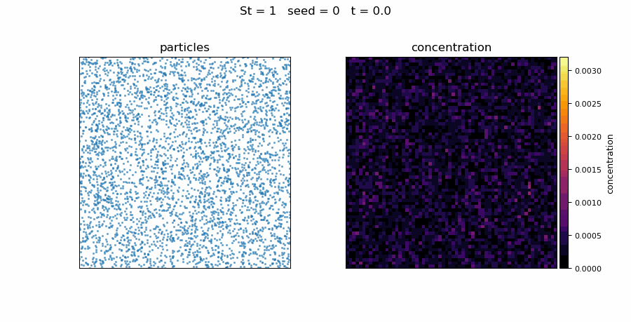
A prescribed, divergence-free Taylor–Green carrier flow drives inertial point particles under linear Stokes drag; their positions are binned into a normalised concentration field that conserves mass. The single governing parameter is the Stokes number.
An unsteady Taylor–Green vortex on a periodic 2π×2π square, u = A(t)(sin x cos y, −cos x sin y) with A(t) = 1 + 0.25 sin(ωt). Analytically incompressible, so no CFD solver is needed — velocity is evaluated directly at each particle.
Each particle obeys dv/dt = (u − v)/τp, integrated with vectorised RK4. With a unit flow time scale the Stokes number is simply St = τp — the ratio of particle response time to flow time controlling how strongly particles cluster.
At each saved time, 5,000 particle positions are binned onto a 64×64 grid and normalised to a concentration field that sums to one (discrete mass conservation), stored channel-first ready for PyTorch.
| Stokes number | Behaviour |
|---|---|
| St = 0.1 | Near-tracer — particles almost follow the fluid |
| St = 1 | Resonant — strongest, fastest clustering |
| St = 5 | Particles significantly lag the flow |
| St = 10 | Highly inertial — weakly follow the instantaneous flow |
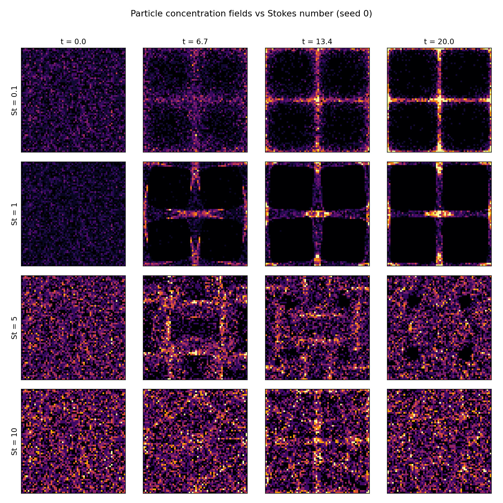
The canonical sweep covers four Stokes numbers across five random seeds, each integrated to t = 20 and saved every 0.1 — fully reproducible from the seeds and stored as a single compressed array.
Four independent physical diagnostics — clustering index, spatial entropy, peak concentration, and field variance — all identify St ≈ 1 as the strongest-clustering regime, with the clustering index D peaking near 1.85. This validates the physics before any machine learning is applied.
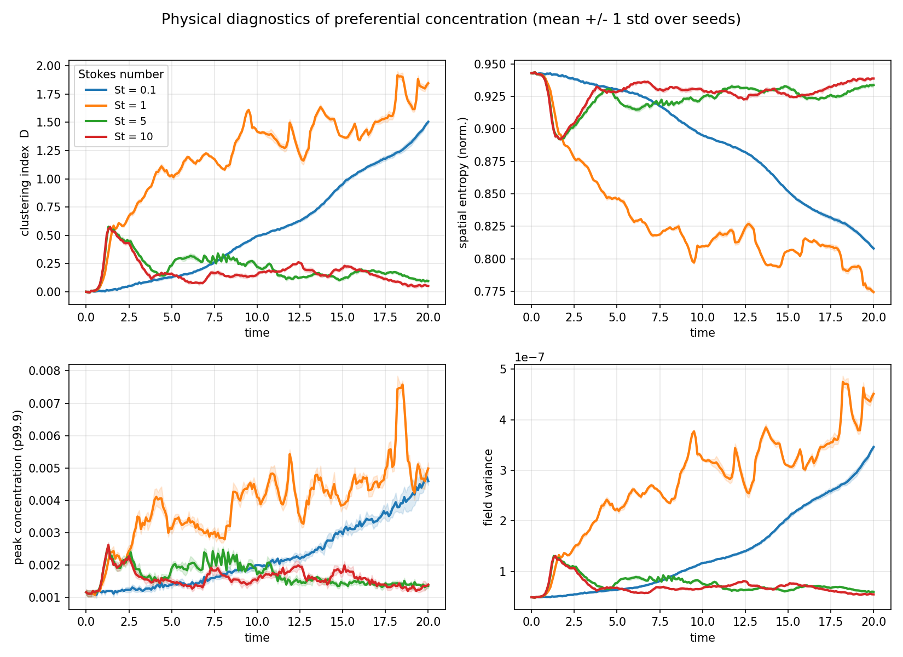
Both a linear POD/PCA basis and a 16-dimensional convolutional autoencoder were trained to compress and reconstruct the concentration fields. All numbers are on a held-out seed (seed 4), with models trained only on seeds 0–3.
| Model | Test reconstruction RMSE |
|---|---|
| POD / PCA, 16 modes | 2.35×10⁻⁴ |
| Conv. autoencoder, 16-dim latent | 2.38×10⁻⁴ |
The two are essentially tied — and both sit near the histogram shot-noise floor (~2.2×10⁻⁴). The raw fields need ~930 POD modes for 90% energy, because the per-cell Poisson noise is high-dimensional and incompressible. Both ROMs instead recover the smooth coherent clustering structure and discard the noise — the key physical insight of the study.
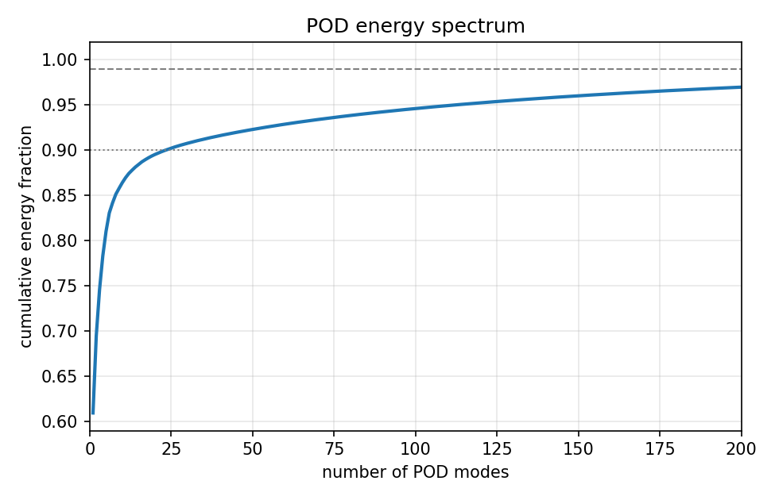
On Gaussian-KDE-denoised fields the picture changes: they become nearly low-rank (24 modes → 90% energy) and POD reconstructs the clustering almost perfectly by r = 16 — a ~3× lower reconstruction floor.
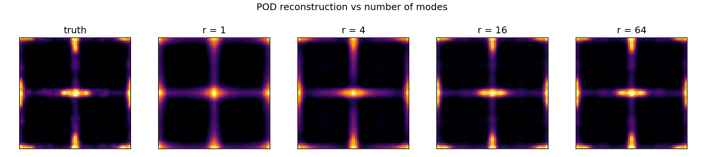
A residual forecaster zt+1 = zt + f(zt) is trained on the frozen autoencoder latent space, then rolled out recursively from t = 0 to t = 20 and decoded back to fields. It beats the persistence baseline at every Stokes number on final-time field RMSE.
| St | Persistence | Forecaster | Improvement |
|---|---|---|---|
| 0.1 | 6.26×10⁻⁴ | 5.75×10⁻⁴ | 8% |
| 1 | 7.15×10⁻⁴ | 6.72×10⁻⁴ | 6% |
| 5 | 3.26×10⁻⁴ | 2.82×10⁻⁴ | 13% |
| 10 | 3.19×10⁻⁴ | 2.39×10⁻⁴ | 25% |
| mean | 4.97×10⁻⁴ | 4.42×10⁻⁴ | 11% |
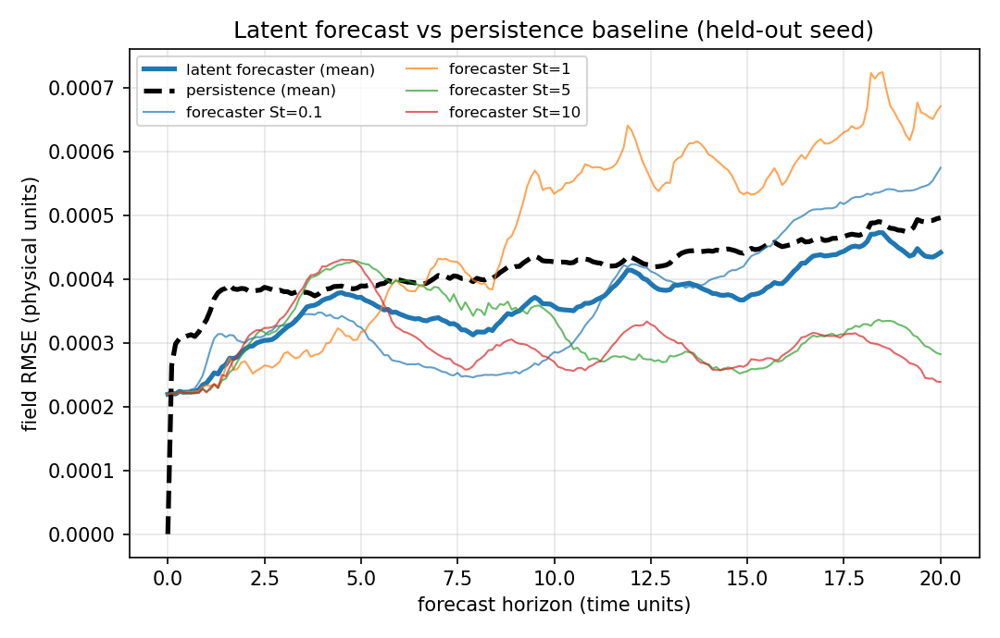
On the denoised data, a Stokes-conditioned, multi-step-trained forecaster does substantially better — roughly halving the persistence error at long horizons.
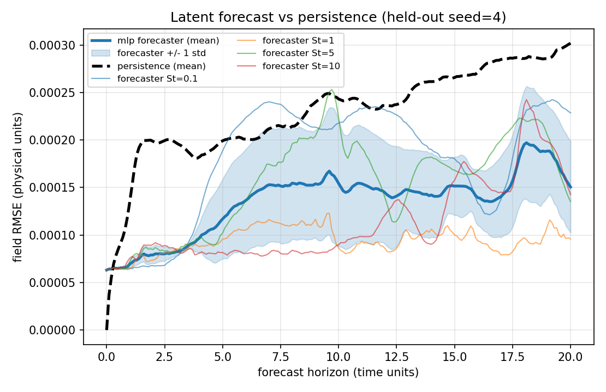
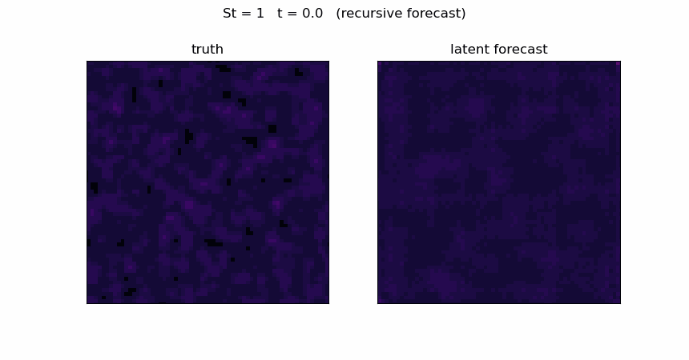
On the smooth single-scale flow, the linear and nonlinear ROMs tie. To expose the advantage of a nonlinear autoencoder, the carrier flow was swapped for a divergence-free multi-mode Fourier field with richer, multiscale structure.
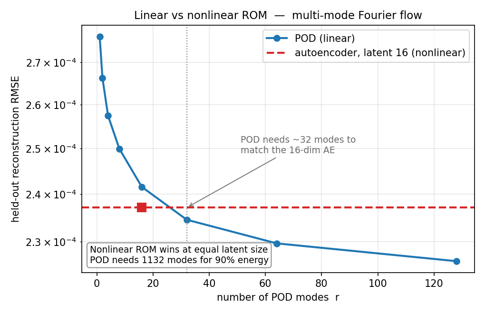
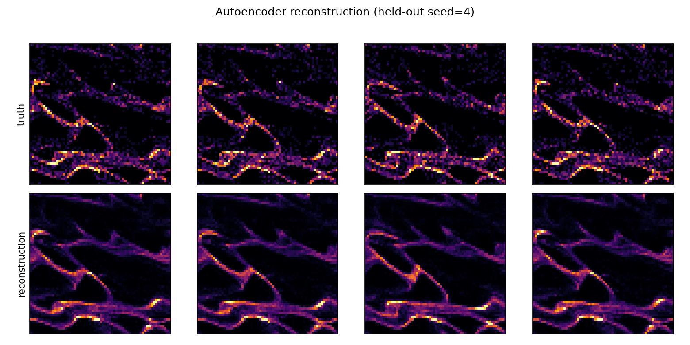
On the multiscale Fourier fields the 16-dim autoencoder beats POD at equal latent size and matches a ~32-mode POD basis — while POD needs 1,132 modes for 90% energy. A Neural-ODE latent forecaster (dz/dt = f(z, St), the direct Universal-Differential-Equation analogue) was also implemented, stable once Stokes-conditioned and multi-step trained.
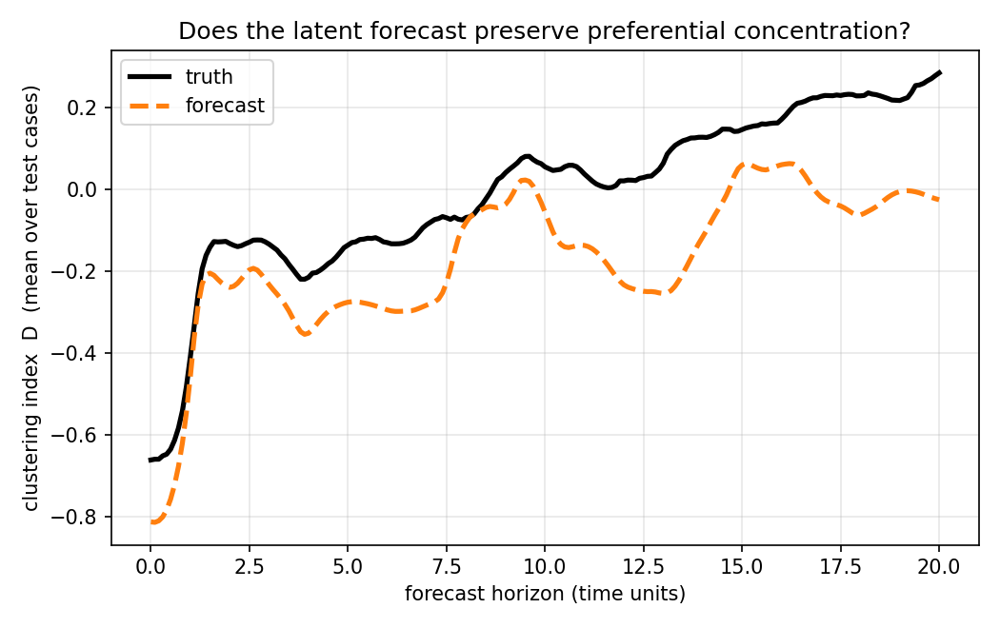
A controlled inertial-particle dataset reproduces textbook preferential concentration, with four diagnostics validating St ≈ 1 as the resonant clustering regime before any model is trained.
POD and a conv-autoencoder tie near the histogram shot-noise floor on raw fields — both recover coherent structure and reject high-dimensional Poisson noise; denoising makes the fields low-rank and nonlinearity wins on multiscale flow.
A residual latent forecaster beats persistence at every Stokes number, and a Stokes-conditioned, multi-step Neural-ODE variant roughly halves the long-horizon error — a clean Universal-Differential-Equation demonstration.